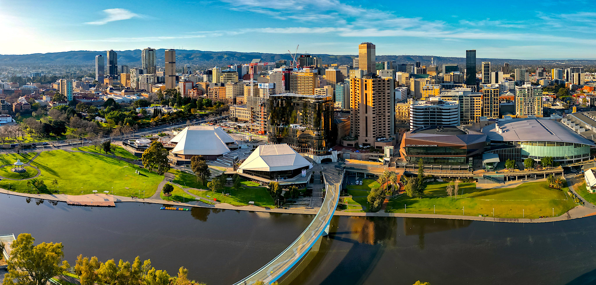
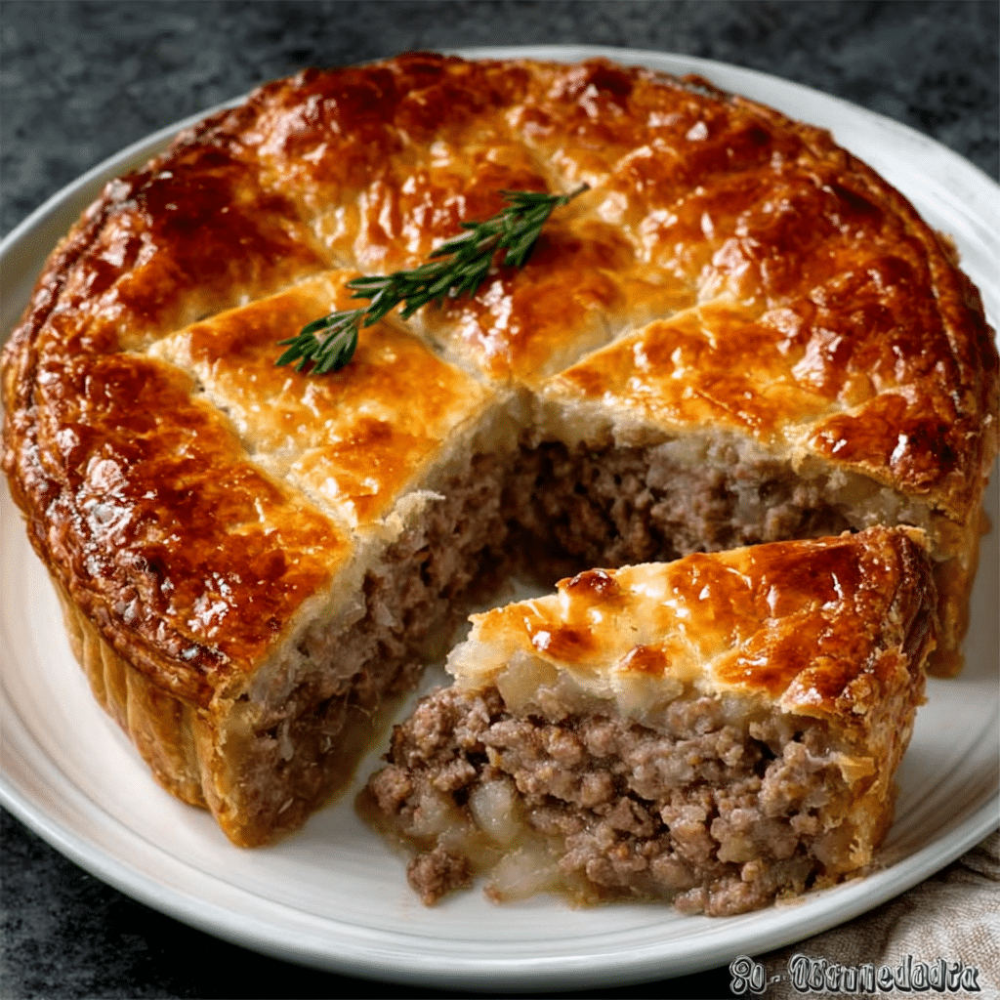
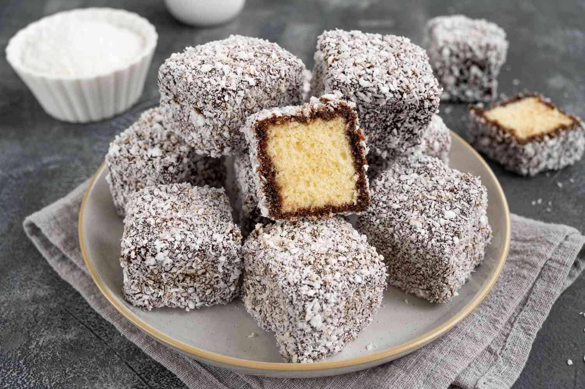
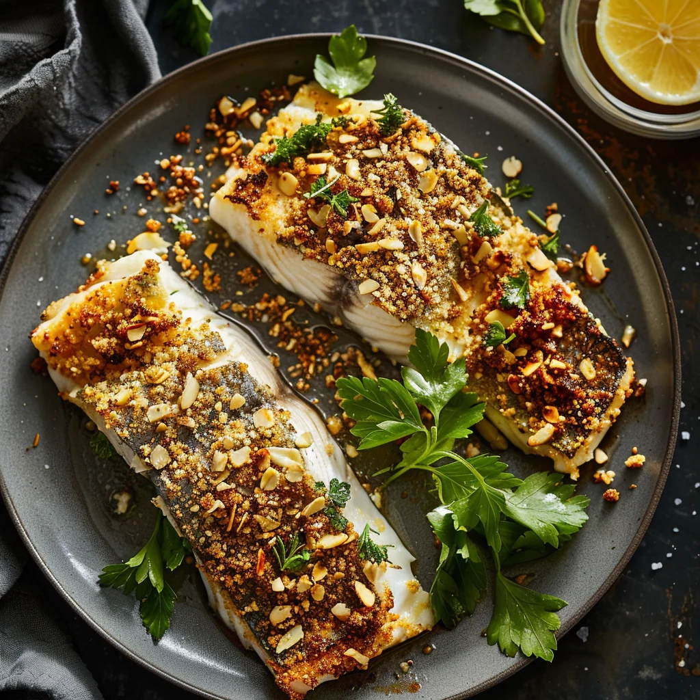
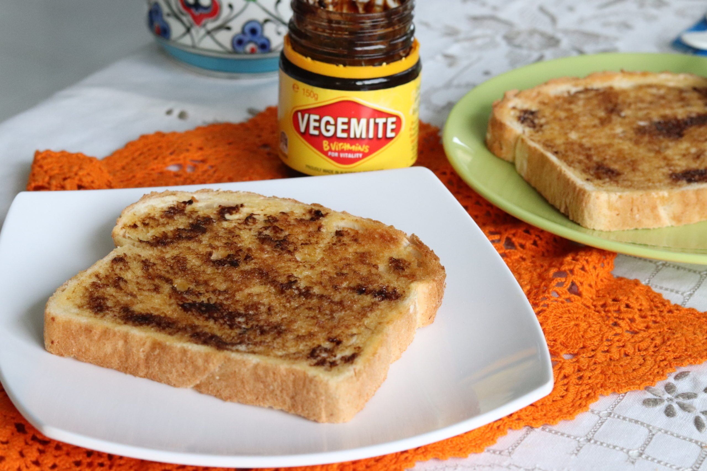
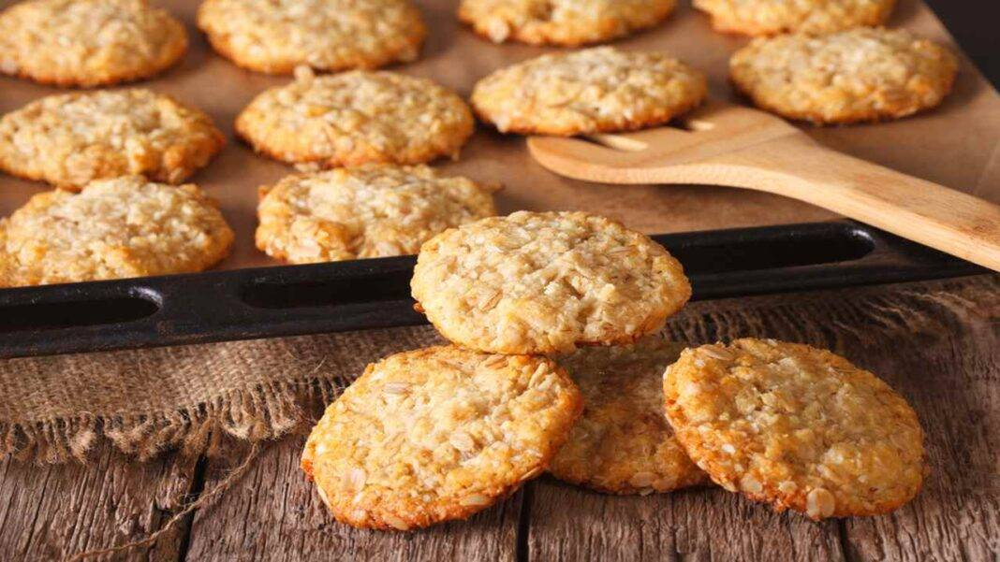

Inverno
- Giugno
- Luglio
- Agosto


Torta salata monoporzione ripiena di carne e salsa, molto amata come spuntino o durante gli eventi sportivi.

Dolce a cubetti di pan di Spagna ricoperto di cioccolato e cocco grattugiato, talvolta farcito con crema o marmellata.
Torta di meringa croccante fuori e morbida al centro, decorata con panna e frutta fresca.

Pesce locale dalla carne delicata, spesso cotto alla griglia e servito con limone e verdure.

Pane tostato spalmato con una sottile quantità di Vegemite, una crema sapida a base di estratto di lievito.

Biscotti croccanti preparati con fiocchi d'avena, cocco e sciroppo dorato, legati alla tradizione australiana e neozelandese.